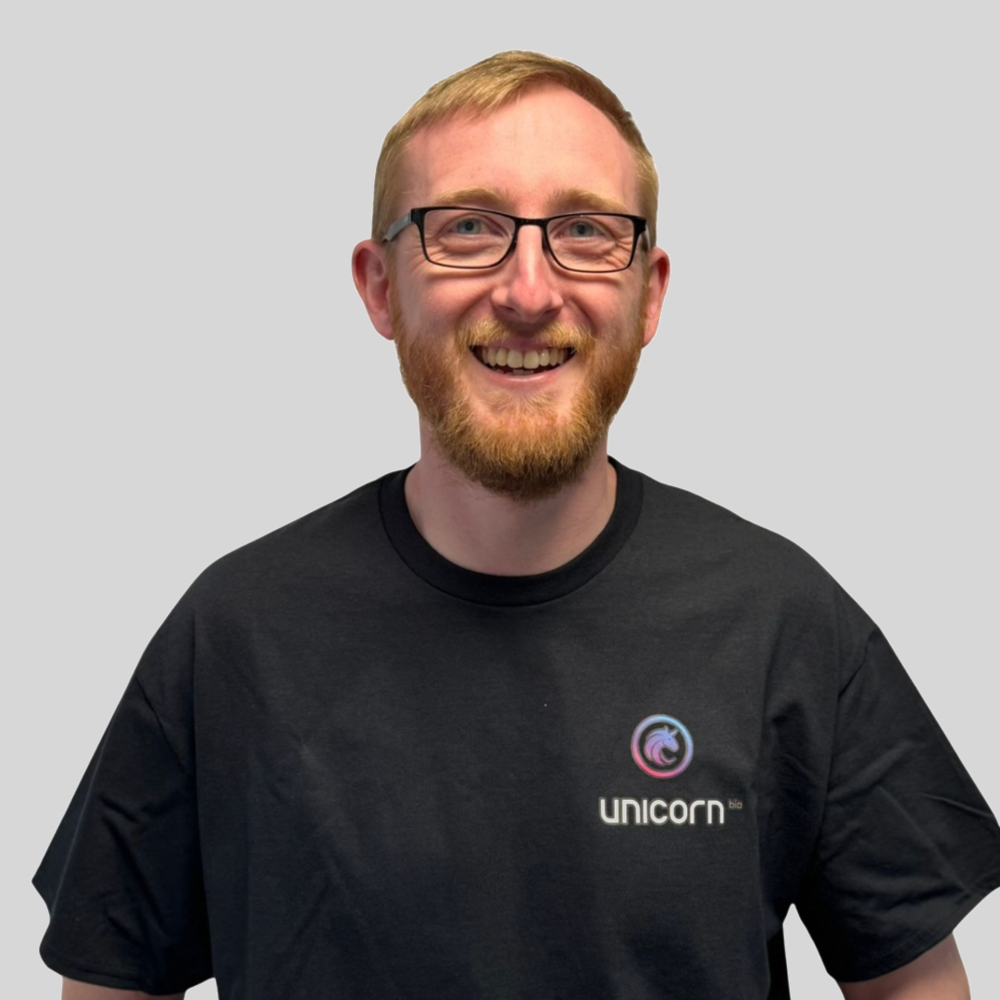
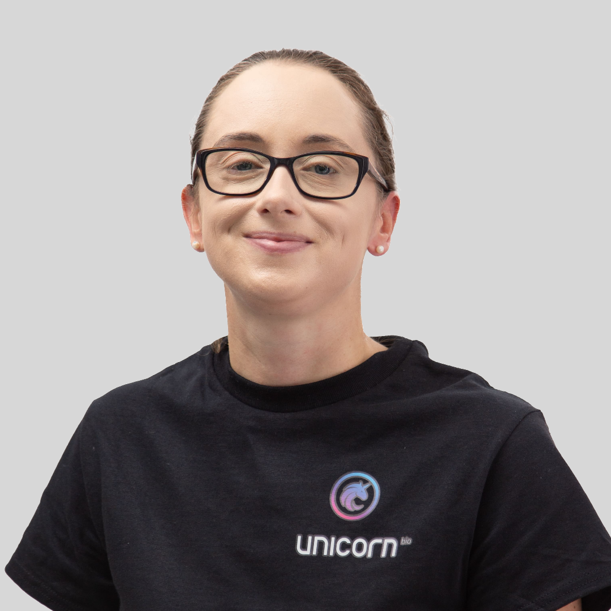
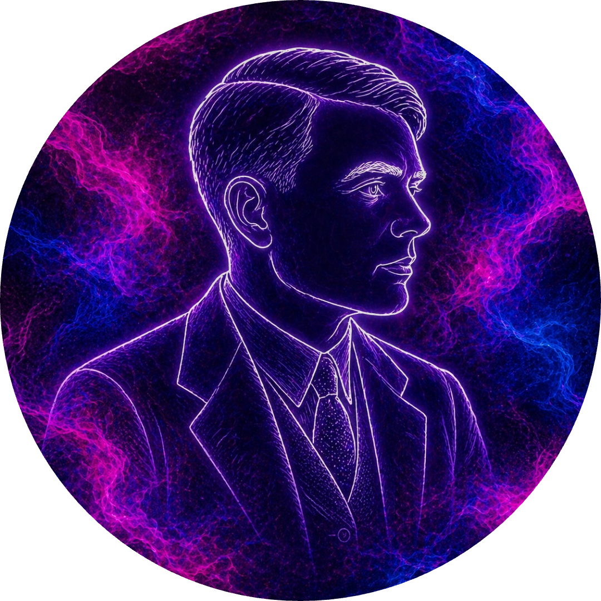

Team
Team
We built the data factory. Now we scale it.
Dr. Adam Glen
🇬🇧
Founder & CEO
Commercial. Chief Architect. Ecosystem Building.

Jack Reid
🇺🇸
Founder & President
Commercial. Product. IP. Finance. US expansion.

Chris Hudson
CTO
>20 years in robotics, software, data infra, and ML. McLaren F1, Bombardier, BAE, Forg3D.

Dr. Joanne Lacey
CSO
>20 years in cell and molecular biology, bioproduction. University of Sheffield.
Jenny Ross
Technical Operations Lead
Archie Lees
Manufacturing Lead
Rory Charlesworth
Production Engineer
Jakub Jasik
Staff Engineer
Amy Nowell
Staff Scientist

Alan
Unicorn's AI operating system